이번 포스트는 정말 별 것 없다.
마크다운 문법에 대한 설명도 아니고 그냥 좀 더 개발자스러운 이미지들을 써보는 글이다.
목차
뭐가 개발자스러운 뱃지인가?
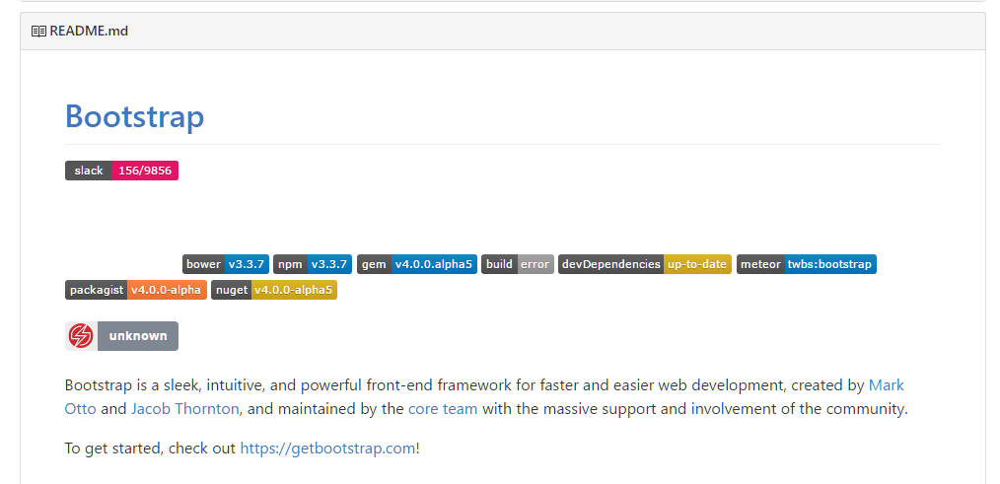
유명한 라이브러리&프레임워크를 보면 위와 같은 이미지? 스티커?들이 보인다.
bower며 npm이며 build 등등의 뱃지가 보인다.
이번 포스트에서 소개할 것은 위 사항들을 사용하는 방법에 대해서 배워보자.
뱃지를 직접 사용해보자.
우선 http://shields.io/로 접속하자.
여기서 나는 내가 npm에 올린 check-browsers라는 라이브러리의 다운로드 수와 버전을 표시하기로 했다.
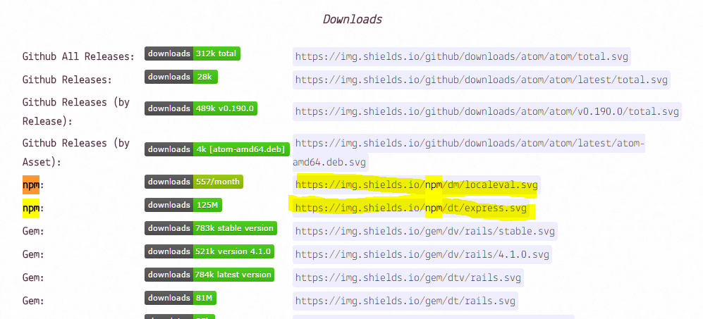
나는 총 다운로드 수를 표현하고 싶어서 npm의 두 번째 이미지를 클릭하였다.
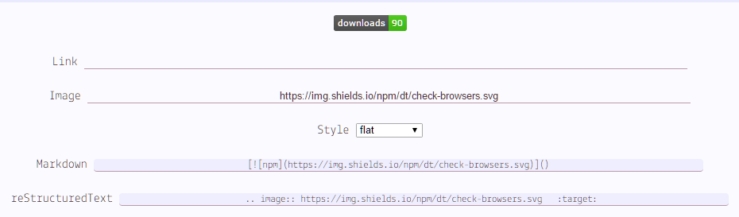
npm 패키지의/dt(다운로드 토탈)/패키지 이름의 형식을 가진다.
마크다운 문법에서 사용하려면 그냥 복붙하면 된다.
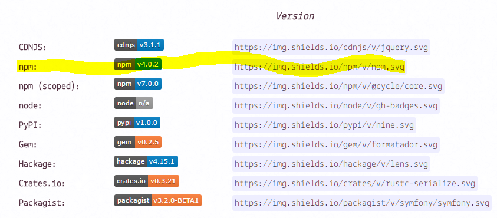
이번엔 내 패키지의 버전을 표시해보자.
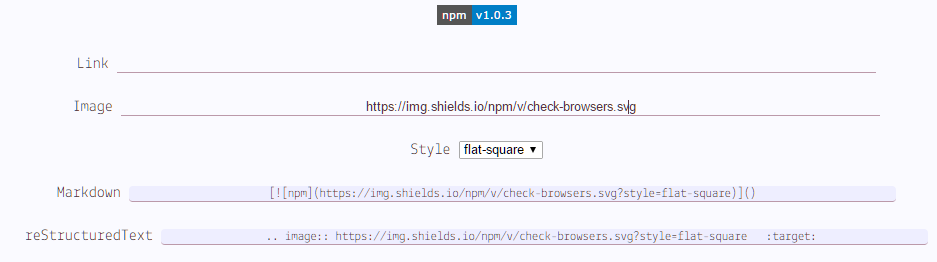
npm 패키지의/v(버전)/패키지 이름의 형식을 가진다.
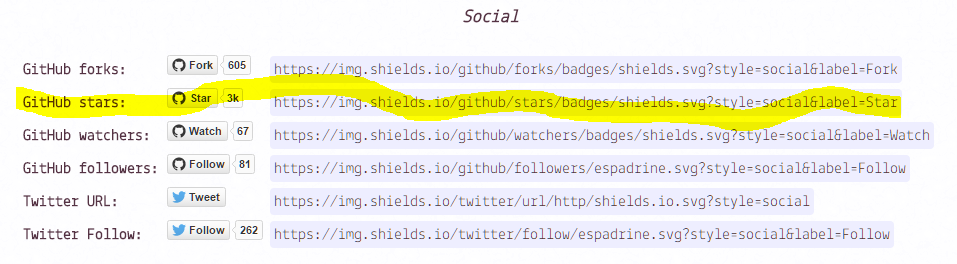
깃헙에서 내 저장소가 따봉 몇 개나 받았는지도 표현할 수 있다.
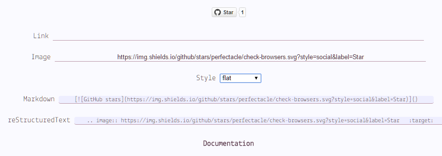
유저이름/저장소 이름의 형식을 가진다.
이외에 커밋 갯수나 트위터 팔로워 뱃지 등등은 직접 찾아서 사용하면 된다.
또한 뱃지는 svg, json, png 포맷을 지원한다.
커스텀 뱃지 만들기
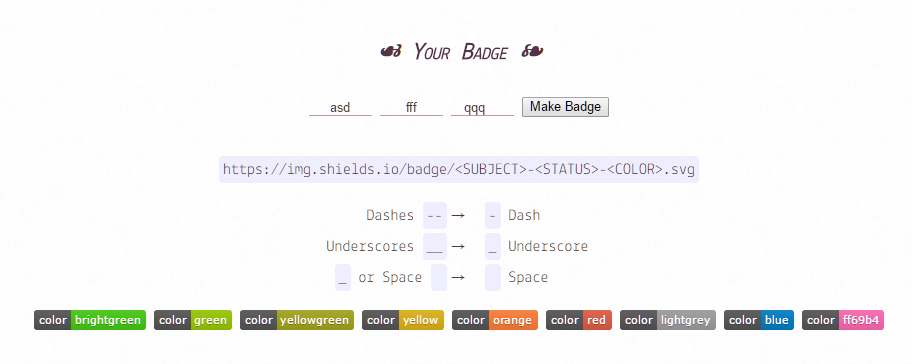
커스톰 뱃지의 형태도 나오고 직접 만들어볼 수도 있다.
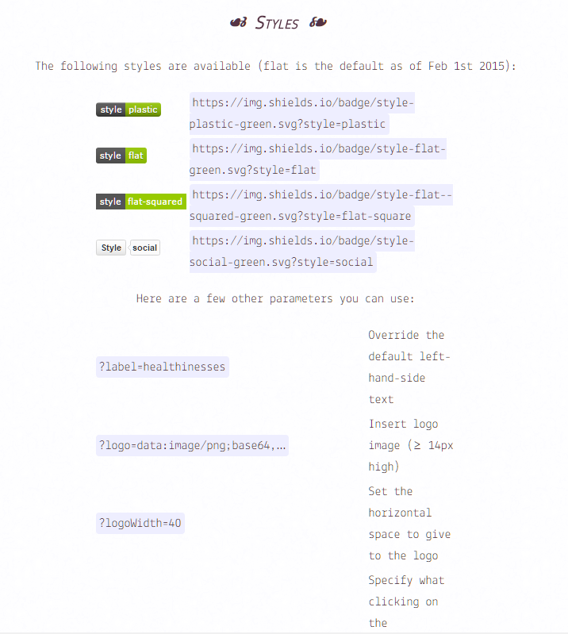
다양한 파라미터를 통해 스타일, 레이블 등등을 바꿔치기 할 수 있다.
이는 커스텀 뱃지나 기존에 만들어져있는 형태의 뱃지에서도 사용이 가능하다.
NPM 뱃지
NPM 뱃지는 NPM만을 위한 뱃지이다.
백문이 불여일견, https://nodei.co/로 접속해보자.
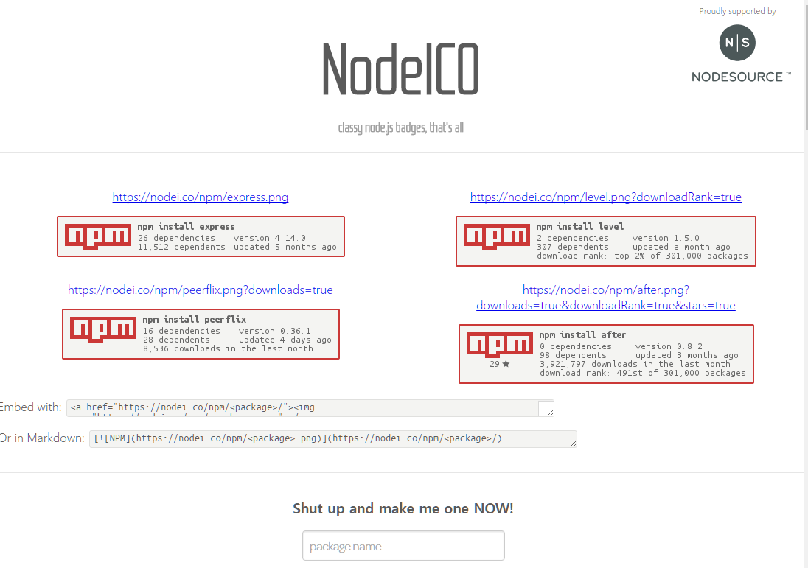
npm에 특화된 다양한 뱃지들이 존재한다.
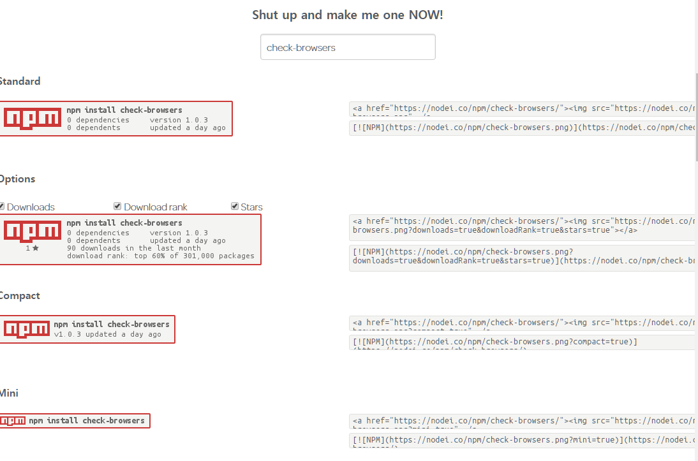
복잡시럽게 읽기 귀찮은 사람들은 간단하게 패키지 이름만 입력하면 다양한 뱃지가 나온다.
좀 더 커스터마이징 하고 싶은 사람들은 해당 페이지를 읽으면 된다.